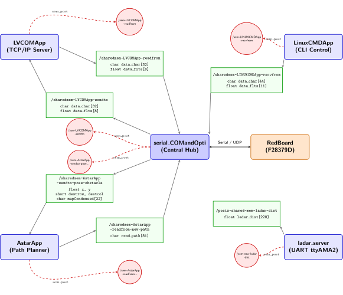
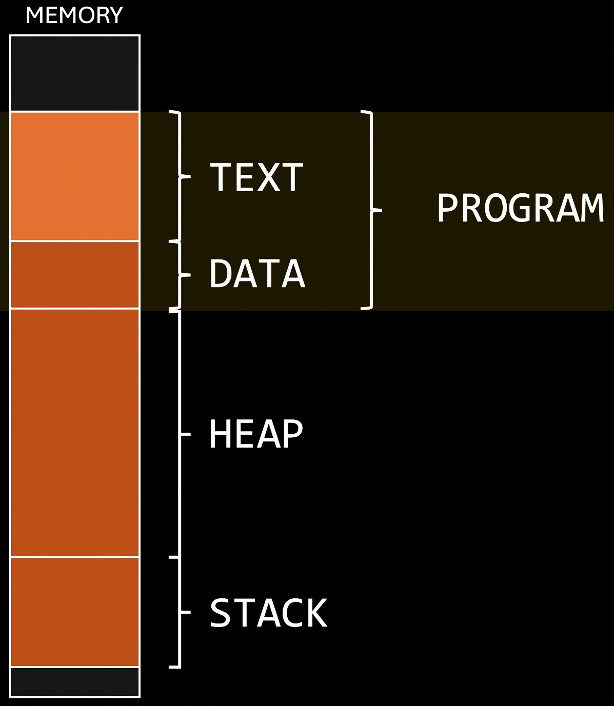
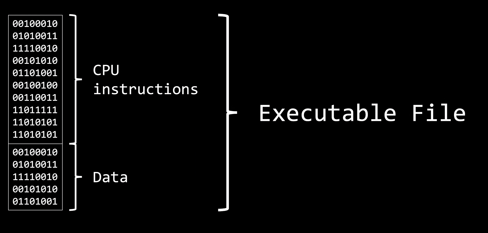
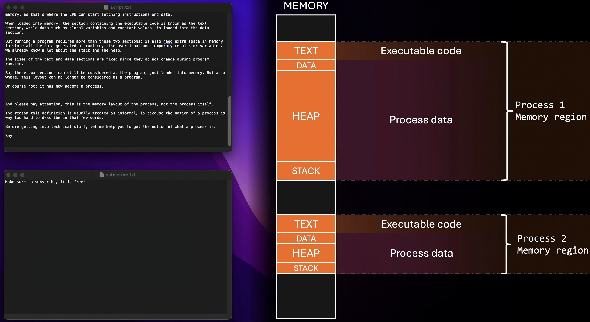
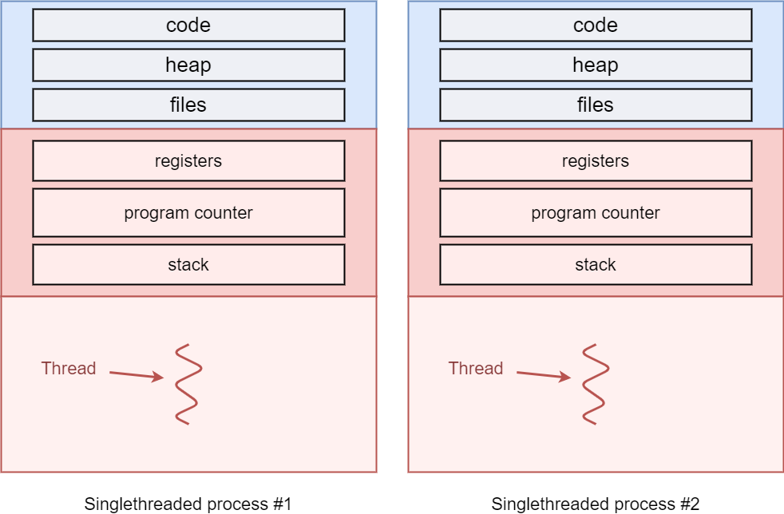
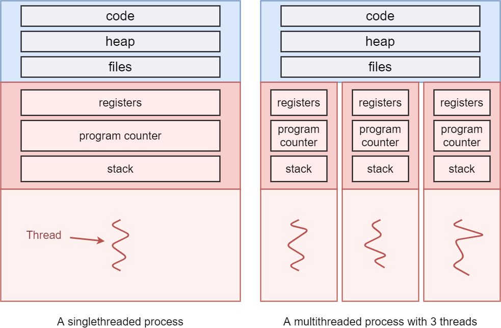
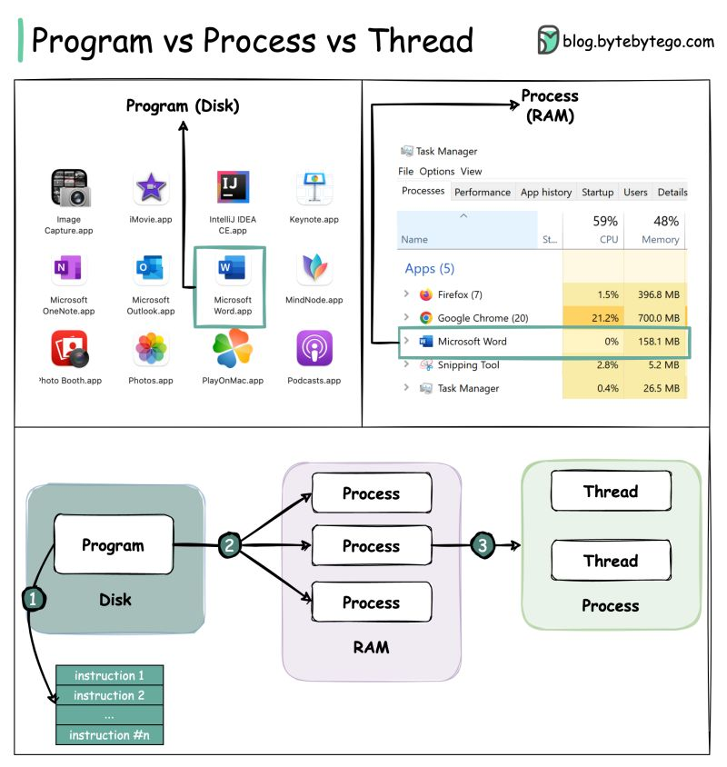
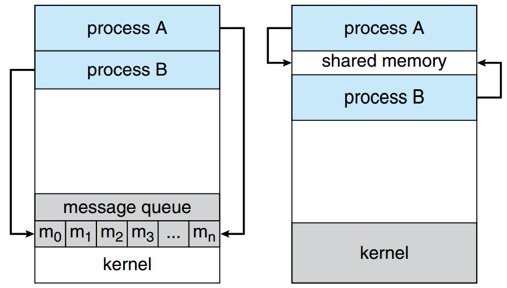

1. SE 423: Introduction to MechatronicsLecture 13: Thread & ProcessesMarius Juston
Wednesday, March 4rd, 2026
2. Review – 5-minute partner discussion
Talk to the person next to you and answer these questions.
- If you have Timer 0 and Timer 1 running at the exact same time in parallel and both are trying to write the robot’s position as (0, 1) and (1, 0) respectively to the same array. What is the worst-possible case that could happen?
- If you drive a car, why is it safer and more robust to separate the “where should I be” (localization) calculations from the “how much voltage goes to the steering motor” calculations rather than a single equation?
3. Reminders
Office Hours:
- Monday: 4-6 PM, Neel
- Tuesday: 11-1 PM, Lakshmi
- Tuesday: 1-3 PM, Samuel
- Tuesday: 2-5 PM, Dan & Marius
Lab: Starting Lab 4 this week. This a 2-week lab!
Homeworks:
- Check-offs for homework 3 Ex 1, 2, 3 & 4 are due March 10, 5PM (The end of office hours)
- Check-offs for homework 3 Ex 5 are due March 24, 5PM (The end of office hours)
- Answers and code submissions for homework 3 are due March 25, 9AM
4. Questions?
Homework, Lab, LabVIEW?
5. Threads & Processes
In future labs we will be using a more powerful microcontroller for doing some heavy computation such as handling camera image data and doing processing on this.
To be able to handle that data throughput we need to use something more complex, i.e., the Raspberry Pi.
The Raspberry Pi is a multi-core Linux system with a lot more RAM.
However, the Raspberry Pi more complex due to its modern architectural design choices so we need to somewhat understand it.
6. Threads & Processes

7. Threads & Processes
8. Threads & Processes
Warning: This lecture is going to be very high level of what threads and processes are.
There is an incredibly big rabbit hole of complexity. If you want to really understand things properly. I would highly recommend the following videos in order:
- The definition of a process vs a program (8 min): https://youtu.be/7ge7u5VUSbE?si=O0Uba2lTkLotpd87
- What a process actual and how it works (16 min): https://youtu.be/LDhoD4IVElk?si=wzx11WVn2Ow84q__
- IPC to share memory between processes (14 min): https://youtu.be/Y2mDwW2pMv4?si=BAZ74dU6Yn5dNik2
- What are threads, and how they work on single core processors (16 min): https://youtu.be/M9HHWFp84f0?si=NMBI0whrwmfuv7IA
- Threads on multicore systems (11 min): https://youtu.be/5sw9XJokAqw?si=IvZqqokTP5nwP-uN
Total of 65 minutes.
You can also practice and get additional details reading https://kuleuven-diepenbeek.github.io/osc-course/ch6-tasks/
9. Threads & Processes
A process is, informally “a program in execution”.
A program is a set of CPU instructions and the data necessary for its task. Which is essential an executable file. It stays in your file storage waiting to be run.
When you run the program, it needs more than that data to be able to run its task which are placed in the heap and the stack, which change dynamically in size.
10. Threads & Processes
The combination of a code, data, stack, heap, and some extra information the information is the process.
Whenever you think of opening Google Chrome, VSCode, CodeComposer and the likes. You are starting a process from a program.
The “.exe” represents the program and then an instance of VSCode represents a process. As you add more tabs or write more code, the editor’s heap / stack size increases, differing from the initial program.
The CPU then cycles between the running process and switches the context that it is looking at.
11. Threads & Processes
https://www.youtube.com/watch?v=7ge7u5VUSbE


12. Threads & Processes
https://www.youtube.com/watch?v=7ge7u5VUSbE

13. Threads & Processes
A thread is the smallest unit of a process.
A thread executes a sequence of operations for a process. Each threads maintains the same code, heap and data from the process; however, they have their own registers, program counter and stack.
Every process runs initially on a single-threaded way with the “main” thread.
However, it is possible to dynamically allocate the number of threads for your application to make it multi-thread.
14. Threads & Processes
Depending on your CPU and how many cores you have you will be able to parallelize how many threads can run at once.
A CPU with 4 cores allows you to run 4 threads in parallel, while a CPU with 8 cores allows you to run 8 in parallel.
What happens if you have more threads than cores, i.e., 1 core and wanting to use 8 threads?
Would we want to wait for one thread to finish before continuing another one? What happens if you must wait for a large file transfer to happen?
This is where scheduler works!
Essentially every thread is given a tiny bit of time to execute an instruction and then you cycle to the next thread, and you do this so fast it seems like you are running in parallel.
15. Threads & Processes
The Red Board is a dual-core microcontroller; however, we only use one CPU1.
So many threads can it have running in parallel?
Are the CPU timers / interrupts running truly parallelly?
16. Threads & Processes

https://kuleuven-diepenbeek.github.io/osc-course/ch6-tasks/threads/
17. Threads & Processes

https://kuleuven-diepenbeek.github.io/osc-course/ch6-tasks/threads/
18. Threads & Processes
#include <stdio.h>
#include <string.h>
#include <pthread.h>
#include <stdlib.h>
#include <unistd.h>
int counter;
void* startThreadJob() {
unsigned long i = 0;
counter += 1;
printf(" Job %d started\n", counter);
for(i=0; i<(0xFFFFFFFF); i++) {
// do nothing
// this is just here to keep the thread running for a while!
}
printf(" Job %d finished\n", counter);
return NULL;
}
int main(void) {
int i = 0, err;
pthread_t tid[2];
counter = 0;
while(i < 2) {
// pthread_create has 4 parameters:
// 1. pointer to pthread_t, needed to keep thread state
// 2. configuration arguments for the thread (passing NULL means we use the defaults here)
// 3. pointer to the function that will run in a separate thread
// 4. parameters to pass to the thread (no arguments for startThreadJob, so we pass NULL)
err = pthread_create( &(tid[i]), NULL, startThreadJob, NULL );
if (err != 0) {
printf("\ncan't create thread :[%s]", strerror(err));
}
i++;
}
// pthread_join pauses the current thread until the thread in the first argument is terminated
// Note that the "main" function automatically also executes in a thread, which we often call the "main thread".
// If the joined thread was already terminated, pthread_join returns immediately
// The second argument can be used to store the return value of the thread
// Our thread currently doesn't return anything, so we pass NULL
pthread_join(tid[0], NULL);
pthread_join(tid[1], NULL);
return 0;
}
19. Threads & Processes

20. Threads & Processes
21. Threads & Processes
Why would we want multi-processes?
- Fault Isolation and Robustness: Each process resides in its own isolated virtual address space. If a process experiences an error, it typically cannot corrupt the heap or stack of an unrelated process. This ensures that a failure in one process does not cause everything else to fail.
- Scalability Across Distributed Systems: While threads are inherently limited to a single physical machine (as they rely on shared local memory), processes can easily be distributed across a cluster or a network of machines. This allows for scaling across different hardware.
- Security and Privilege Separation: Multi-processing allows for the strict application of the Principle of Least Privilege. Different processes can be executed with distinct user permissions or security contexts. For instance, in a browser architecture, the rendering engine might run with restricted sandboxed privileges, while a kernel-level driver or system service runs with elevated permissions, preventing malicious content from escalating access.
- Enhanced Security and Isolation: Because processes do not share memory by default, one process cannot accidentally (or maliciously) read or overwrite the data of another. This "sandboxing" is critical for executing untrusted code or separating sensitive cryptographic operations from general UI logic.
- True Hardware Parallelism (CPU-Bound Tasks): In many interpreted languages (notably Python with its Global Interpreter Lock), threads cannot run in parallel on multiple cores (less true recently). Multiprocessing bypasses these software-level locks by giving each process its own instance of the interpreter and its own memory space, allowing N processes to utilize N CPU cores simultaneously.
22. Threads & Processes
Why would we want multi-threading?
- Responsiveness: When a single program is broken into multiple threads, the experience feels more responsive. Dedicated threads can be created to handle user requires, while other threads can process data in the background.
- Resource sharing: Programs that have multiple threads typically want some sort of communication between these threads. This is done more easily between threads than between processes, as threads implicitly share memory via their heap
- Economy: Context switching becomes cheaper when switching between threads in comparison to switching between processes. This is because less per-thread state needs to be tracked, in comparison to more per-process state.
- Scalability: Multiple threads can run in parallel on multi-core systems in contrast to a single threaded process.
23. Processes Communication
24. Threads & Processes – IPC – Inter-Process Communication
- Each process resides in its own isolated virtual address space. While isolation is useful for security sometimes you need to communication information
- To communicate information between processes you either do it through 2 methods:
- Shared Memory:
-
- Maps a singular physical memory block into the virtual address spaces of distinct processes
- Message Passing (Signals / Pipes):
-
- OS-mediated streams or interrupts.

https://kuleuven-diepenbeek.github.io/osc-course/ch6-tasks/interprocess/
25. Threads & Processes - IPC
// Producer (a process which puts data inside of the shared memory)
#include <stdio.h>
#include <stdlib.h>
#include <string.h>
#include <fcntl.h>
#include <unistd.h>
#include <sys/shm.h>
#include <sys/mman.h>
int main() {
const int SIZE = 4096; /* buffersize (bytes) */
const char *name = "OS"; /* shared memory object name */
const char *data_0 = "Hello";
const char *data_1 = "World!";
int shm_fd; /* shared memory file descriptor */
void *ptr;
/* create the shared memory file descriptor */
shm_fd = shm_open(name, O_CREAT | O_RDWR, 0666);
/* configure the size of the shared memory file */
ftruncate(shm_fd, SIZE);
/* memory map the shared memory file */
ptr = mmap(0, SIZE, PROT_WRITE, MAP_SHARED, shm_fd, 0);
/* write to the shared memory file */
sprintf(ptr,"%s",data_0);
ptr += strlen(data_0);
sprintf(ptr,"%s",data_1);
ptr += strlen(data_1);
return 0;
}
// CONSUMER (which uses the data it gets from the producer)
#include <stdio.h>
#include <stdlib.h>
#include <fcntl.h>
#include <unistd.h>
#include <sys/shm.h>
#include <sys/mman.h>
int main() {
const int SIZE = 4096; /* buffersize (bytes) */
const char *name = "OS"; /* shared memory object name */
int shm_fd; /* file descriptor */
void *ptr;
/* open the shared memory file */
shm_fd = shm_open(name, O_RDONLY, 0666);
/* memory map the shared memory file */
ptr = mmap(0, SIZE, PROT_READ, MAP_SHARED, shm_fd, 0);
/* read from the shared memory file */
printf("%s",(char *)ptr);
/* remove the shared memory file */
shm_unlink(name);
return 0;
}
26. Threads & Processes
27. Threads & Processes - IPC
- The message passing is split into 2 different mechanism signals and pipes
- Signals are the cheapest form of IPC. They literally allow one process to send a signal (a code) to another process, using the function kill() (terminates a running program).
kill -L
1) SIGHUP 2) SIGINT 3) SIGQUIT 4) SIGILL 5) SIGTRAP
6) SIGABRT 7) SIGBUS 8) SIGFPE 9) SIGKILL 10) SIGUSR1
11) SIGSEGV 12) SIGUSR2 13) SIGPIPE 14) SIGALRM 15) SIGTERM
16) SIGSTKFLT 17) SIGCHLD 18) SIGCONT 19) SIGSTOP 20) SIGTSTP
21) SIGTTIN 22) SIGTTOU 23) SIGURG 24) SIGXCPU 25) SIGXFSZ
26) SIGVTALRM 27) SIGPROF 28) SIGWINCH 29) SIGIO 30) SIGPWR
31) SIGSYS 34) SIGRTMIN 35) SIGRTMIN+1 36) SIGRTMIN+2 37) SIGRTMIN+3
38) SIGRTMIN+4 39) SIGRTMIN+5 40) SIGRTMIN+6 41) SIGRTMIN+7 42) SIGRTMIN+8
43) SIGRTMIN+9 44) SIGRTMIN+10 45) SIGRTMIN+11 46) SIGRTMIN+12 47) SIGRTMIN+13
48) SIGRTMIN+14 49) SIGRTMIN+15 50) SIGRTMAX-14 51) SIGRTMAX-13 52) SIGRTMAX-12
53) SIGRTMAX-11 54) SIGRTMAX-10 55) SIGRTMAX-9 56) SIGRTMAX-8 57) SIGRTMAX-7
58) SIGRTMAX-6 59) SIGRTMAX-5 60) SIGRTMAX-4 61) SIGRTMAX-3 62) SIGRTMAX-2
63) SIGRTMAX-1 64) SIGRTMAX
28. Threads & Processes - IPC
#include <stdio.h>
#include <stdlib.h>
#include <signal.h>
// Signal handler function
void signalHandler(int sig) {
printf("Interrupt handled: %d", sig);
// Optionally exit the program after handling
exit(sig);
}
int main() {
// Handle signal
signal(SIGINT, signalHandler);
// Automatically generate a signal
raise(SIGINT);
return 0;
}
29. Threads & Processes - IPC
Anonymous pipes are like waterslides. (Named pipes are not often used)
You can put some data on it on one end (the top of the slide) and it comes out the other (the bottom), but it’s not possible to go up the waterslide from the bottom.
One process can write into the pipe, while the other can read from of the pipe. We write to a “virtual file” in memory.
This type of pipe can only be created between two processes that have parent-child relationship.
What happens internally is that the stdout of the first process is mapped to the stdin of the second process.
For this, we use the | (pipe) character.
When using the CLI, anonymous pipes are a very powerful tool for chaining different commands. The output of the first command will be the input for the next command. This can be chained multiple times:
ps -ux | grep xeyes | head -1 | tr -s " " | cut -d " " -f 3
List of all my processes | filter only lines that contain “xeyes” | filter only the first line | squish all consecutive spaces together to a single space | split the input on a space, report the third field
30. Thread Communication
31. Threads & Processes
32. Threads & Processes – Race Conditions
Race conditions, imagine you have the following code where I have multiple threads running at the same time?
int counter = 0;
void* doSomeThing(void *arg) {
int local_id; // new, per-thread variable
counter += 1;
local_id = counter; // make a local copy of counter for this thread
return NULL;
}
We must think very low level, can potentially switch between different thread at each assembly instruction (the compiled version of this C code, between C and binary code)!
33. Threads & Processes – Race Conditions
The problem is the following:
// Code that both threads will execute:
counter += 1;
local_id = counter;
// -----------------------------------
// Thread 1
counter += 1; // after this, counter == 1
// Before Thread 1 can execute local_id = counter, it is paused by the CPU
// Thread 2
counter += 1; // after this, counter == 2
local_id = counter; // thus, in Thread 2, local_id is correctly 2
// Here, the CPU switches back to Thread 1
// Thread 1
local_id = counter; // now, local_id is still 2, instead of 1... mission failed
This is called a race condition!
This happens when you the ordering of instructions is not what you expect! There is some randomness in the instruction call ordering, so you might not always get this problem.
Can the Red Board also have this problem?
34. Threads & Processes
The problem is that what we just did was not an atomic operation . This means that internally, it is not implemented with a single CPU instruction but rather out of a series of different operations / instructions.
Even simple, unassuming code can cause a race condition. For example, the following causes a race condition,
int counter = 0;
void* doSomeThing(void *arg) {
counter += 1;
return NULL;
}
What is causing the race condition in this case?
The “+= 1”, is causing the race condition! Since that is not a single operation!
// In simple pseudocode, counter += 1 or counter++ looks like this:
int temp = counter + 1; // temp is for example the CPU register here, and "counter" is the value in memory
counter = temp; // the register value is written back out to the memory
35. Threads & Processes – Mutex and Locking
We need a way to secure the important sections in a thread such that you can lock and unlock access for pieces of code for the threads.
The simplest method is called the mutex (Mutual Exclusion).
The behavior can be seen as the lock on a restroom door. If you are using the restroom, you lock the door. Others that want to occupy the restroom must wait until you’re finished and you unlock the door (and get out, after washing your hands).
Hence, the mutex has only two states: one or zero, on or off, locked or unlocked.
Internally the mutex is implemented as a single, atomic CPU instruction!
The number of code / instructions between locking and unlocking a mutex should be kept to a minimum. If you put your whole thread inside the mutex then you are just making all your threads run in serial again! Losing all the parallelization benefits!
You can still have a Deadlock problem (where threads lock each other out causing infinite waiting)
36. Threads & Processes – Mutex and Locking
int counter;
pthread_mutex_t counter_lock;
void* doSomeThing(void *arg) {
unsigned long i = 0;
int local_id;
pthread_mutex_lock(&counter_lock);
counter += 1;
local_id = counter;
pthread_mutex_unlock(&counter_lock);
printf(" Job %d started\n", local_id);
for(i=0; i<(0xFFFFFFFF);i++);
printf(" Job %d finished\n", local_id);
return NULL;
}
37. Threads & Processes – Semaphores
While the mutex is nice and simple, we can improve the thread synchronization techniuques using Semaphores!
This technique is useful in producer-consumer problems.
The producer has 1 or more threads to prepare data and put it in a limited amount of shared memory (an array for example)
The consumer wants to be able to read that ready data.
Now we want to have multiple producers be able to write to that shared memory at a given time if there is an open spot. If not wait!
Similarly, the consumers can read data from the shared memory if there is something there. If not wait!
38. Threads & Processes – Semaphores
We want threads that want to read/write an item from/to the array can only do so if it is possible.
If not, the thread should be paused until it’s sure that it can make progress, instead of constantly checking.
To do this, we need a new type of lock that keeps track of who’s waiting for what to happen, which is called the semaphore.
We could have a mutex and check if the specific element has been changed or not; however, having a mutex locking and unlocking almost immediately to check that element, is called busy waiting or polling and is bad for performance as you’re doing a lot of unnecessary work.
39. Threads & Processes – Semaphores
Semaphores are simply a counter, but one that can automatically pause/resume threads that use it.
It only has 2 operations (below is pseudocode for the functions):
- Wait: continues if counter > 0 and decrements it by 1. If not waits until counter > 0
- Post: increments counter by 1. Causes 1 of the waiting threads to un pause.
Can be used to help wait for data to arrive.
wait(semaphore v){
while(1){
atomic {
if (v > 0){
v--;
return;
}
}
}
}
post(semaphore v){
atomic {
v++;
return;
}
}
40. Threads & Processes – Semaphores
#include <stdio.h>
#include <pthread.h>
#include <semaphore.h>
#include <unistd.h>
sem_t signal_sem;
void* worker_thread(void* arg) {
printf("Collected sensor data...\n");
sleep(2); // Simulate the time it takes to read hardware sensors
printf("Finished reading.\n");
sem_post(&signal_sem); // Increments S to 1. Unblocks the main thread.
return NULL;
}
int main() {
pthread_t thread;
// Initialize the semaphore to 0
sem_init(&signal_sem, 0, 0);
printf("Start reading.\n");
pthread_create(&thread, NULL, worker_thread, NULL);
printf("Waiting for sensor reading...\n");
// Attempt to decrement S. Since S is 0, the CPU strictly blocks here.
sem_wait(&signal_sem);
printf("Data collected, processing!\n");
// Clean up memory
pthread_join(thread, NULL);
sem_destroy(&signal_sem);
return 0;
}